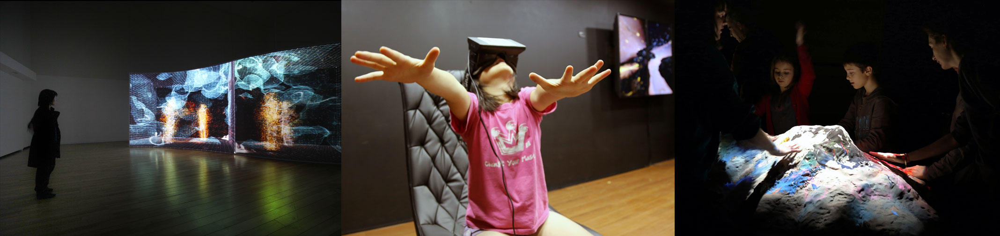
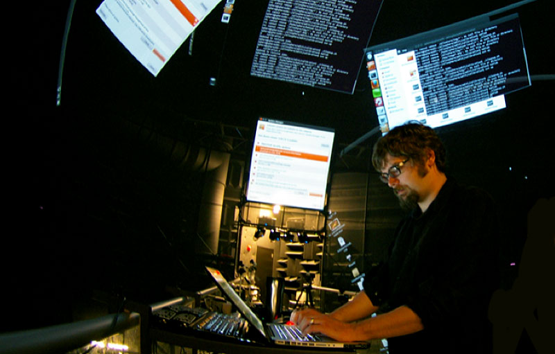
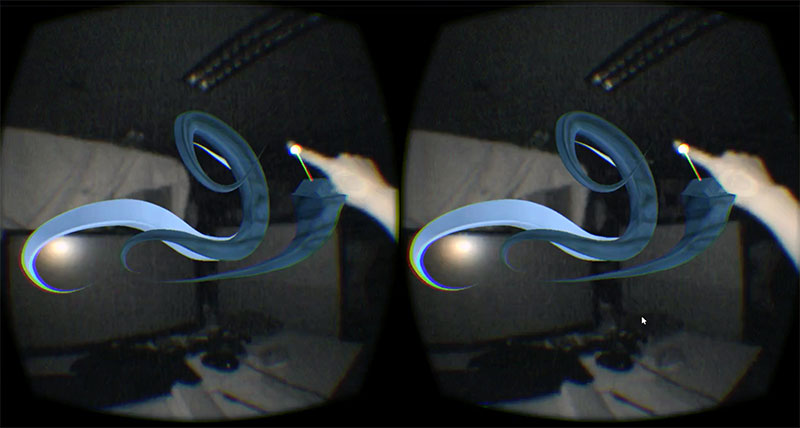
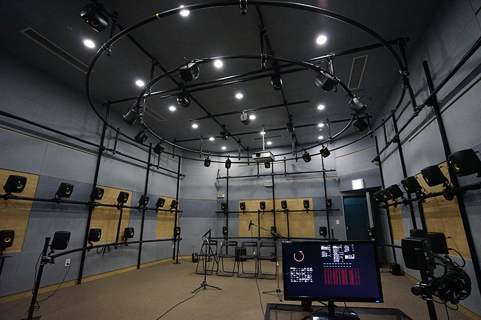

The Alice lab for Computational Worldmaking develops transferable knowledge and creative coding technology as well as intensifying computationally literate art practice in the construction of responsive artificial worlds experienced through rapidly emerging mixed/hybrid reality technologies including both Virtual Reality (VR) and Augmented Reality (AR). Inspired by the creativity of nature, its research-creation program leverages strong simulation and the self-modifying capacity of computational media to create artificial worlds whose rules can be rewritten while participants interact within them, pioneering heightened levels of human-machine interaction and intensified aesthetic experience through meaningful engagement using the whole body. Cutting across work in generative art, computer graphics, human-computer interaction, artificial life, complex systems and compiler technology, this research program reinforces influential work at York in augmented reality, computer vision, stereoscopic cinema and ubiquitous screens, and results in transferable research, open-source tools, and novel creative works.
It is directed by Graham Wakefield, Assistant Professor appointed to the Department of Computational Arts and the Department of Visual Art and Art History in the School of the Arts, Media, Performance, and Design (AMPD), and a Canada Research Chair (Tier II) in interactive information visualization at York University, Toronto, Canada. Wakefield's art installations have been exhibited at leading international museums and peer-reviewed events in areas of digital media, computation and culture, including ZKM Karlsruhe, La Gaite Lyrique Paris, and SIGGRAPH, and have attained national and international awards including VIDA, the premier art & artificial life competition (2014). He was previously an integral researcher at the AlloSphere, a unique 3-storey spherical multi-user virtual reality instrument, UC Santa Barbara 2007-2012, creating multi-screen artworks and scientific visualizations, and software infrastructure for worldmaking that not only forms the foundation for most projects in the AlloSphere today, but is also widely used beyond including by internationally-renowned artists. He is also co-author of a framework for creative coding (Gen for Max/MSP, 2011) which now has tens of thousands of users, and is used by industrial design labs and incorporated into courses at several major universities. At York he is also a member of The Centre for Vision Research and Sensorium organized research units. The computational worldmaking lab continues the research-creation activity from Dr. Wakefield's former position at the Graduate School of Culture Technology, Korea Advanced Institute of Science and Technology (KAIST), Daejeon, Korea.
Research Streams
Artificial Nature

This research stream synthesizes new “artificial natures”: installations integrating software models drawn from systems biology, artificial intelligence, and other biologically inspired sciences, with immersive virtual- and mixed-reality environments in physical space, such that humans take upon new roles within adaptive ecosystems. The installations are displayed at high-levels of sensory immersion, through the use of large-scale displays, wide fields of view, stereoscopic rendering, high frame-rates, and spatialized audio. Each artificial nature presents a computational world with its own physics and biology, within which visitors interact to become essential participants within the system. An ultimate goal is to bring the generative capacity of computation into an experiential level reminiscent of, yet different to, the open-endedness of the natural world; to evoke extended aesthetic experiences that recapitulate something akin to the child-like wonder regarding the complexity, beauty, and sublimity of nature. This project extends a line of research initiated in 2008 by Haru Ji and Graham Wakefield, resulting in over thirty-five exhibits across nine countries, including festivals such as SIGGRAPH (Yokohama), Microwave (Hong Kong), Digital Art Festival (Taipei), conferences such as ISEA (Singapore), and EvoWorkshops (Tubingen), and venues including ZKM (Germany), La Gaite Lyrique (Paris), CAFA (Beijing) and City Hall (Seoul), and recognition in the international artificial life art award VIDA. Project website.
Collaboration & funding: Living Architecture Systems Group SSHRC Partnership (pending), York University Minor Research Grant, York University Faculty Association.
Worldmaking Framework

Developing software addressing the challenges of integrating complex models and algorithms of process and behaviour, 3D motion tracking, mixed-reality immersive display, and live and collaborative creativity. The resulting framework will be an environment for collaborative development and “creative coding”, in which designers and artists to work at high structural levels, specifying goals in visual and schematic terms, using design patterns of model-driven engineering and code generation to implement the underlying code automatically, and just-in-time compilation to tighten this loop between schematic expression of idea to its optimally efficient implementation down to scales of milliseconds, such that in the moment insights can be experienced and evaluated at minimal cognitive cost, and without sacrificing complexity or bandwidth of the resulting systems. Outcomes will be relevant to the domains of as digital media arts, architecture, digital sculpture, entertainment, gaming, computer science, and art/science collaboration.
Collaboration & funding: Living Architecture Systems Group SSHRC Partnership (pending), Ontario government Early Researcher Awards program (in submission), Canada Foundation for Innovation (in submission).
Collaborative Creativity for Virtual Reality

2016 heralds affordable consumer virtual reality (VR), however industry leaders assert that research in content and software design remains urgent, and media figures highlight creative applications as focal points for this research. This research stream focuses on the creation of worlds from within VR, addressing three complementary axes: 1) a symbolic-algorithmic axis of rewriting the code of a world while immersed within it, as a new direction of live coding, 2) an embodied axis, augmenting hand and body gestures-in-motion with dynamics-driven simulation to create far richer and more complex forms that nevertheless retain the gestural nuances of the creator, and 3) collaborative methods to co-author worlds as a social process, in real-time. It will result in rigorously researched interaction models, transferable technologies, and unique training in emerging digital media.
Collaboration & funding: CFI JELF/ORF SIF, Canada Research Chair, SSHRC Connections, Ontario government Early Researcher Awards program (in submission).
Environments that Hear

Sound is an emotively significant yet relatively underexplored as a spatial, cyber-physical medium. Acoustic audio feedback is generally regarded as a problem to be suppressed, yet belongs to a larger class of nonlinear dynamical systems that includes most living systems. Operating through an acoustic medium permits response to the acoustic resonances of real physical spaces and built environments, and an unrestricted range of responses from participants at levels of temporal resolution unavailable in visual and tactile media. In this project our aim is to maximise the enticing complexity latent in acoustic feedback in physical environments, using distributed arrays of microphones and loudspeakers that are connected through biologically-inspired digital signal processing. Input signals are analyzed through modules that simulate how we hear, incorporating psychoacoustically-inspired acoustic scene analysis to ensure human relevance, as well as partitioning input into echoic, short- and long-term memory, packaging features of acoustic and cognitive recognition, and simulating pattern recognition, anticipation, attention, and arousal in order to modulate the sounds sent to the loudspeakers. At the second stage, higher-level algorithms perform evolutionary adaptation to adaptive shape modulation mappings, achieving intentional acoustic effects within an unpredictable real-world environment. As a result, the system can optimize a real-world environment for specific acoustic and musical responses. This research will have diverse applications in architecture, media arts, and exhibition development.
Collaboration & funding: Living Architecture Systems Group SSHRC Partnership (pending).
Curious Spaces
An pursuit of into new depths of mixed-reality human-machine interaction and responsive environments toward a larger goal of intensifying aesthetic experience through meaningful collaborative human-machine interaction over extended durations. This project will explore strategies by which software can propose changes to make to itself, and accept or reject these changes according to reward functions that privilege neither easily predictable nor entirely unpredictable patterns, but which serve intrinsic high-level goals of curiosity and self-improvement; in effect leading it toward the edge of optimal complexity of interaction with its external environment. When the system’s environment is defined by real-world sensors of human participants, using full-body cameras and physiological sensing, and shaped by knowledge of human visual perception and spatial awareness, the emerging dialogue will be tightly fitted to yet not over prescribed by its human inhabitants. It posits interactive environments and artificial realities that display high levels of ambient artificial intelligence which are human-centric without being pre-determined or task-centric. The resulting prototype installations will permit a broader bandwidth of complex, meaningful, and open-ended interchange between the worlds of the human and of the surrounding mediascape.
Collaboration & funding: Living Architecture Systems Group SSHRC Partnership (pending), Canada Foundation for Innovation (in submission).
Students
- Alison Humphrey, PhD Cinema and Media Studies.
- Alia Miroshnichenko, PhD Communications and Culture.
- Reşat Fuat Çam. PhD Cinema and Media Studies.
- Dale Rosen, Digital Media program.
- Lalaine Ulit-Destajo, Digital Media program, graduated 2016.
- Youhan Guan, Digital Media program, graduated 2016.
- Mengmei Zhou, Digital Media program, graduated 2016.
- Seunghun Kim, PhD Culture Technology (KAIST), graduated 2015.
- Sunga Jang, MS Culture Technology (KAIST), graduated 2015.
- Sojung Bahng, MS Culture Technology (KAIST), graduated 2015.
Location
Support
- Canada Research Chairs program
- The Canada Foundation for Innovation (CFI) John R. Evans Leaders Fund (JELF)
- Social Sciences and Humanities Research Council
- The Ontario Research Fund
- The School of the Arts, Media, Performance and Design (AMPD) at York University
- York University Faculty Association
- Daejeon Culture and Arts Foundation (Artience Program)
- Seoul Foundation for Arts and Culture (Imagination Powerhouse Program)